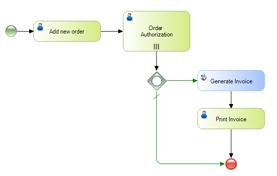
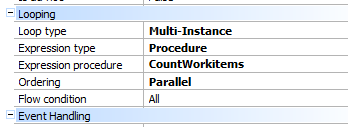
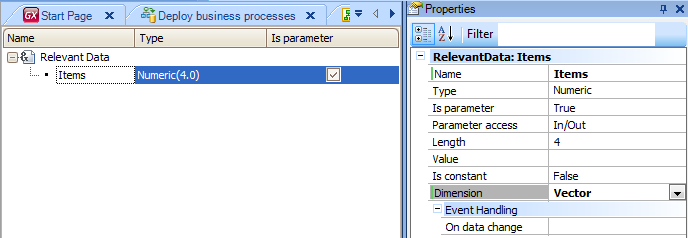
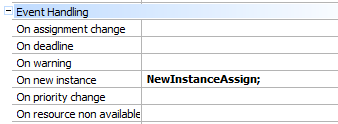

There are cases where we will need to create a variable number of parallel tasks and automatically assign them to specific users. For instance, we may want several users to authorize a purchase in parallel (where the number of users could vary) and the process to continue only when all users have authorized it. Such behavior can be modeled as in the following diagram.  In this case, for the Order Authorization task, we create as many workitems as users have the "Chief" role (this number is determined in a procedure). For a task to be executed n times in parallel, we must indicate, in the Looping properties group, that the Loop type is Multi-instance. We must also indicate whether the expression type (Expression type property) is a Rule or Procedure, and accordingly indicate the procedure or rule as well. In this example, we will use the above procedure.  We also indicate a parallel ordering so that the n instances are performed in parallel, and the condition (Flow condition) is All, so it will continue only after all of them have been completed. After generating the n tasks, in order to have them automatically assigned to the corresponding users, the first thing we must do is save the users’ ID in a relevant data of vector type. So we must create a a relevant data of vector type called Items.  In the same procedure we use to count the number of instances to be created, we will add the users in the Items relevant data: parm(in:&WorkflowProcessDefinition,in:&WorkflowProcessInstance,in:&WorkflowWorkitem,out:&numberofinstances); &WorkflowApplicationData = &WorkflowContext.ProcessInstance.GetApplicationDataByName("Items") &WFServer.Connect('WFADMINISTRATOR','WFADMINISTRATOR') &WFOrgModel = &WFServer.GetOrganizationalModel() &WFFilter.Role = &WFOrgModel.GetRoleByName('Chief') &Users = &WFOrgModel.ListUsers(&WFFilter) // Listing the users filtering by role "Chief" &i = 1 For &User in &Users &WorkflowApplicationData.SetValue(&i, &User.Id.ToString()) &i += 1 EndFor // It saves each of those users in the relevant figure "Items" // &User type is WorkflowUser, and &Users is a collection of the same type. &Users will contain the list of users that meet the conditions. // &numberofinstances is the output parameter indicating how many workitems to be created &numberofinstances = &Users.Count If we want the tasks to be assigned to users when they are created, then we must configure, in the "On new instance" property, a procedure that will perform such assignment.  In this example we use the following procedure:
parm(in:&WorkflowEvent);
&WorkflowWorkItem = &WorkflowEvent.Target.ToWorkitem()
// It lifts the relevant data containing users that qualify
&WorkflowApplicationData = &WorkflowContext.ProcessInstance.GetApplicationDataByName("Items")
&WFServer.Connect('WFADMINISTRATOR','WFADMINISTRATOR')
&WFOrgModel = &WFServer.GetOrganizationalModel()
&UserId = &WorkflowApplicationData.GetValue(&WorkflowWorkItem.Index)
&WorkflowUser = &WFOrgModel.GetUserById(&UserId)
&WorkflowWorkItem.Assign(&WorkflowUser)
What it does is: assign, to each workitem generated, one of the users saved in the relevant data. NOTE: To execute the procedures defined in Event handling, we must enable the events in the Workflow client properties (Settings -> Server -> Advanced -> Event handling). DownloadsXPZ containing the example.
|